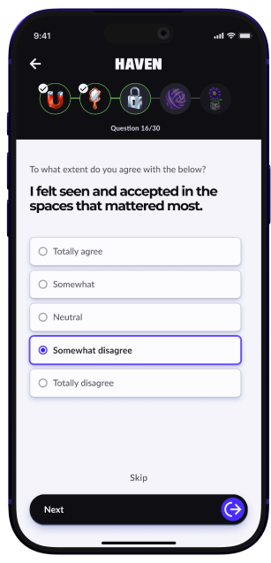
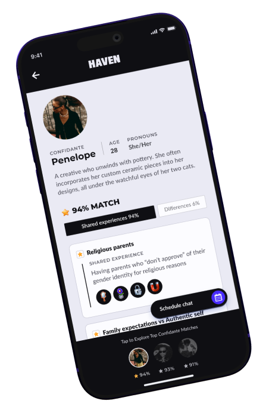
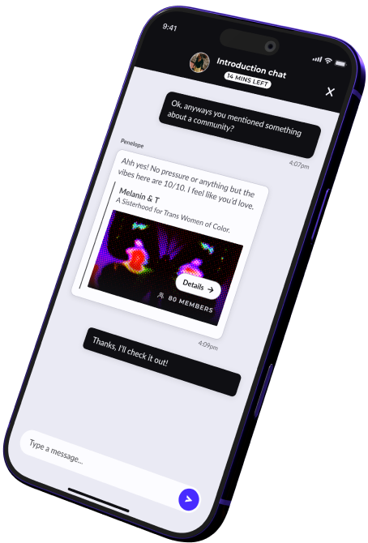
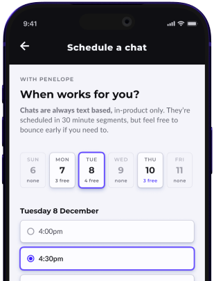
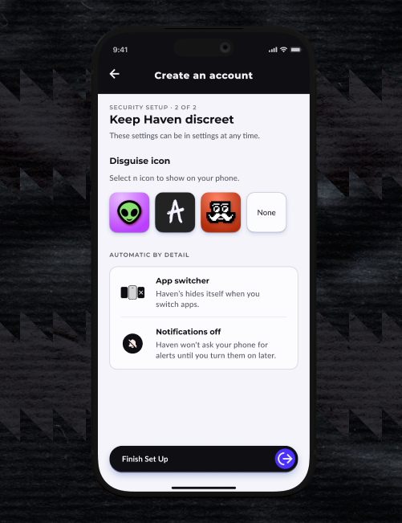

Haven ending directions
Three ways to lay out the approved ending copy. Same words in each: the two needs, the teen's path through Haven in order, then Identity and Community. Each closes on the next case study, the only thing you can click. The boxed notes are rationale only.
Direction 1 · Two sides
The whole picture
To be understood
A teen starts with a short identity quiz, so Haven can match them with Confidantes who share the experiences that shape them. Each Confidante’s profile shows those shared experiences first. Before choosing one, the teen can have an intro chat to see if it feels right.
To stay unseen
Every session happens over text at a time they pick, when they can be alone. The app itself can hide behind a different icon.
Identity was the first phase. Community is next.
Next case studyMondaiDirection 2 · The path in screens
The whole picture

A short identity quiz matches a teen with Confidantes who share the experiences that shape them.

Each Confidante’s profile shows those shared experiences first.

An intro chat comes before choosing, to see if it feels right.

Every session is over text, at a time they pick when they can be alone.

The app itself can hide behind a different icon.
Identity was the first phase. Community is next.
Next case studyMondaiDirection 3 · Quiet type
The whole picture
A teen starts with a short identity quiz, so Haven can match them with Confidantes who share the experiences that shape them. Each Confidante’s profile shows those shared experiences first. Before choosing one, the teen can have an intro chat to see if it feels right. Every session happens over text at a time they pick, when they can be alone. The app itself can hide behind a different icon.
Identity was the first phase. Community is next.
Next case studyMondai